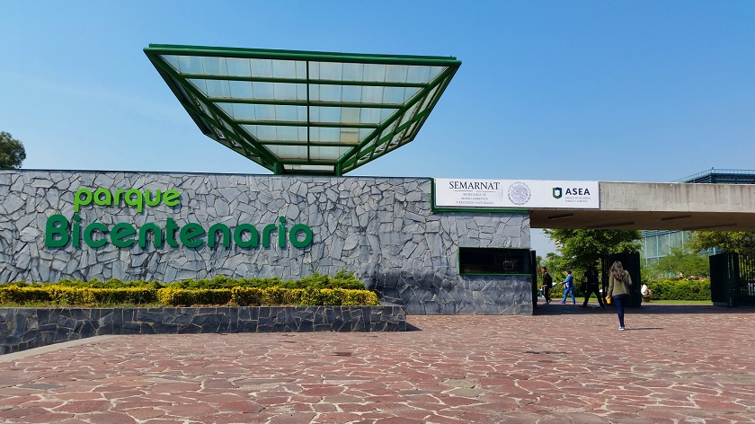

Descubre

Vive
Disfruta
Sumérgete
Sumérgete en un oasis de tranquilidad donde la naturaleza y la recreación se encuentran en armonía. Déjate llevar por los senderos serpenteantes que te conducirán a través de exuberantes jardines, proporcionando un refugio verde lejos del bullicio urbano. ¿Te gusta el ejercicio al aire libre? Explora nuestras amplias áreas para correr, andar en bicicleta o simplemente relajarte. Con sus majestuosos estanques y fuentes, el Parque Bicentenario es el lugar perfecto para disfrutar de un tranquilo paseo. Reúnete con amigos y familiares para un picnic en nuestras áreas designadas o simplemente relájate bajo la sombra de los frondosos árboles. ¿Eres un amante de la cultura? Descubre eventos culturales y artísticos que se celebran regularmente en nuestro anfiteatro al aire libre. Desde conciertos hasta representaciones teatrales, el Parque Bicentenario es un escenario vibrante para la expresión artística. Además, los más pequeños de la familia disfrutarán de áreas de juegos especialmente diseñadas para su diversión y seguridad. Organiza un día familiar completo con actividades para todas las edades. ¡Ven y únete a nosotros en el Parque Bicentenario, donde la naturaleza y la diversión convergen para crear momentos inolvidables!
Fotografías
Verano
Fiestas
Actividades físicas
Mascotas